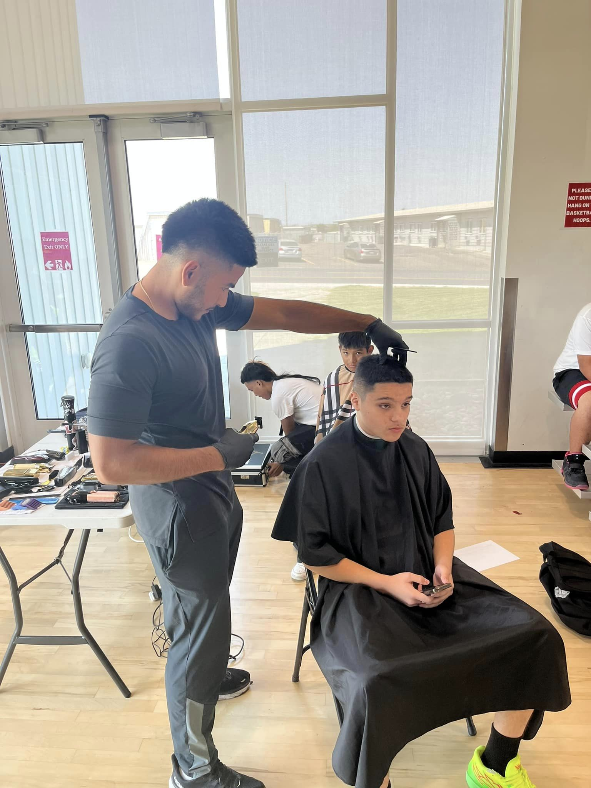
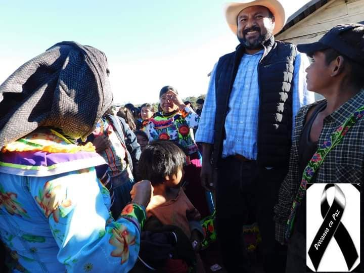

Commitment to Giving Back: Inspired by Generosity, Driven by Compassion.
My unwavering dedication to giving back to the less fortunate stems from a deeply rooted sense of compassion and a desire to emulate the selflessness and kindness demonstrated by my father. His actions serve as a beacon, inspiring me to strive toward a life characterized by benevolence and service to others.
At the core of my aspirations lies a commitment to aiding those in need through various means—whether it's providing nourishing meals, offering shelter, donating clothing, or extending mentorship and guidance. Every act of kindness, no matter how small, holds the potential to uplift and transform lives.
My goal is to not just meet the basic needs of individuals facing hardships but to empower and inspire them to overcome challenges and reach their fullest potential. This extends beyond material support; it encompasses fostering a supportive environment, offering mentorship, and creating opportunities for growth and advancement.
Driven by a belief in living a godly life, I aim to embody compassion, empathy, and a profound sense of responsibility toward the well-being of others. By following in my father's footsteps, I aspire to create a legacy of generosity and impact, leaving a lasting imprint on the lives of those less fortunate.
Ultimately, my journey is guided by a profound desire to contribute positively to the world, championing the cause of the marginalized, and embodying the principles of empathy and kindness in every aspect of my life.

Caption for Photo 1

My dad devoted his live to help the less fortunate, my mission is to follow his foot steps.